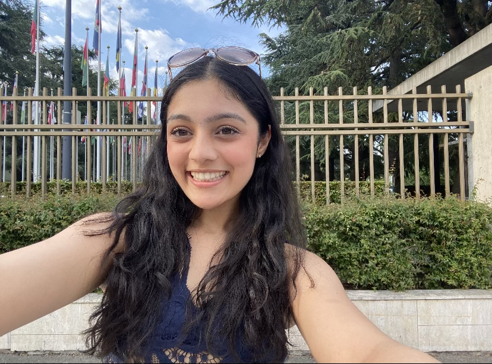

Introduction
Introduction
What's this you stumbled on? It is the results of a project created by AI Camp students meant to analyze the data on NBA teams to predict a winner when two compete. Look through this website to understand the types of analysis that was needed to finish this project, and to learn more about the results obtained.
Explaining The Data
We used a combination of 2022-23 team statistic data directly from nba.com as well as 2022-23 matchup data from basketball-reference.com. These datasets were combined so team statistic data for each team in a given match could be used to determine the outcome of that matchup. These are both links to the websites where we pulled our data from:
https://www.basketball-reference.com/leagues/NBA_2023_games.html
https://www.nba.com/stats/teams/advanced?PerMode=Totals&SeasonType=Regular+Season
Our target variable was the outcome of each match. We want to be able to predict which team would be more likely to win a given match with a reasonable confidence level.
Team Statistics Key:
PIE: Player Impact Factor (roughly measures a players impact on the games they play in)
TS%: True Shooting Percentage
FG%: Field Goals Total Percentage
TOV%: Turn Over Percentage
REB%: Rebound Percentage
DREB%: Defensive Rebounds Percentage
OREB%: Offensive Rebounds Percentage
AST: Assist
AST/TO: Assist To Turnovers
AST%: Assist Percentage
NetRtg: Net Rating (typically measured by OffRtg-DefRtg)
DefRtg: Defense Rating
OffRtg: Offense Rating
MIN: Average Minutes Per Game
Graphs
Teams and Total Wins Bar Graph

This bar graph demonstrates the total wins per each NBA team. It is organized from most wins to least.
Heatmap
This heat map represents the relationship between the visitor and home teams, specifically how any two variables between the home and visitor teams are correlated. It uses the correlation coefficient (a numerical measure of some type of statistical relationship between two vairables) to measure this. This helps us identify what factors contribute to a winning team.
To accurately predict which NBA team will win based on the given variables, we must first look at which variables are correlated with visitor wins (when the visiting team wins and the home team loses). When looking at the heatmap, it was found that a given team's total wins and a team's offensive rating are positively correlated with a correlation coefficient of 0.79. On the other hand, the a team's total wins and a team's defensive rating are negatively correlated with a correlation coefficient of -0.79. This means that the better a given team's offense is, the greater their total wins. However, our target variable, VisitorWin, was not highly correlated with any of our features. H_Total_Wins and H_Total_Losses were correlated with VistorWin with the coefficents -0.12 and 0.12 respectively. This means, given a matchup of two teams, if one team has more total wins, the other team is less likely to win the individual game. The opposite is also true. However, even these relationships are relatively small. The small relationship between our target variable and features may make classifcation difficult or inaccurate.
Histograms

Constructs a histogram that compares the statistics of teams that won and loss different games, along with calculating the mean for winning and losing teams and graphing it onto the histograms. Graphing the data in this way allows us to see which statistics have significant differences between teams that win and teams that lose. These are some of the histograms with the largest differences. Since the differences between the two sets are small and minor, the data shows that nba games are very random and that all the teams have similar levels of skills, with minor differences and events that account for winning and losing
AI Models
KNN

Score: 0.6913439635535308
Accuracy: 0.55
KNN stands for K nearest neighbor. How it works is based on one data point the algorithm will find other point's near it (in other word's its neighbors). We chose a K value to determine how many points nearest it to use. For example, if we set k to 3, it will chose the 3 closest data points and then averages out to make a predicted classification. For our set of data we used grid search to find out that 6 is the best k for us. The two numbers displayed are the score and accuracy results we got. The score is how well our trained data fit our test data. Accuracy is how precise we were. Our results are lower than we hoped but it is still impressive based on the fact NBA data is always changing.
Random Forests

Score: 0.8280182232346242
Accuracy: 0.5454545454545454
Random Forests are just one of many ways to get a desired result. It works by using a common algorithm that involves multiple branches and the process of elimination to get to its ultimate conclusion. For example, some of the correlations within our data were a strong positive correlation to offense and a strong negative correlation to defense. If Team A is better at offense while Team B is better at defense, then we would be quite confident that Team A would win. Random Forests fit well with our data because of the max_features capabilities (specifically max_depth), and in the end it gave the highest score out of all three models we tested.
Neural Network

Score: 0.48519362186788156
Accuracy: 0.4590909090909091
Neural networks work somewhat like a set of neurons in a brain. Each artificial "neuron" is connected to other neurons around it through edges. The strength of each one can be changed with each iteration through its weight, and it "learns" by adjusting the strength of individual neurons until it can provide an optimal result. Surprisingly, this wasn't a good option for our dataset. We arsume that our dataset wasn't correlated enough to draw proper conclusions, as basketball games tend to be volatile and random.
Why We Made This
Our focus was on NBA games and creating a website that could predict which team would win. Some of the team liked basketball while others didn't know much about basketball but we were able to overcome that. Everyone in our team wanted to learn more about data science and AI, so this project was a great way for us to get accomplish that while creating a fun outcome. We also, made this as a way to add a cool project to put in our future portfolios.
Results and Final Conclusions
Overall, for our AI Models the score and accuracy rates are lower than desired. This is because NBA data is always changing. Also, some of the data such as net rating can also be objective. While the overall desired accuracy could be higher, our accuracy was impressive given our circumstances. Despite how relatively random NBA games are, it was remarkable that we were able to find as much noticable correlation in the data as we did.
What Now?
As we've discussed before, the confidence at which we can predict which team will win in a NBA match is not as high as we would like it to be. Because of this, we wish to improve our data and recognize more correlations. In the future, we hope to improve our data by using more datasets that are relevant to the issue. While we cannot guarantee the improvement of said data and correlations, we will continue to update our data. Here's to hoping that NBA games are not as random in the future!
About The Team
Saanvi Ibrahimpatnam
Hi! My name is Saanvi and I am a rising senior at Fishers High School. I have gained a keen interest about technology and its futuristic application over the past few years and joined AI camp to learn more! This camp has taught me so much from more about machine learning to teamwork! In the future I plan on working with cybersecurity as well as broaden my knowledge about computer science as a whole.
Muhammad Atif
Hi, I am about to be a senior in highschool. I did this camp in order to learn whether or not coding and AI is something I want to pursue in the future. This camp was awesome for a first experience and I had a great time working with my team and our instructor!
Sahistha Shakya
Hi there! My name is Sahistha and I am an incoming senior. I have always had an interest for coding and I joined AI Camp to experience it first hand. In the future I hope to work in a career invloving computer science. Through this camp I have learned so much and made some friends along the way. It is incredible how much we were able to accomplish in a short time with the help of our amazing instructor, Serena.
Austin Allen
Hey, I'm Austin and I'm going to be going into my senior year of high school. I did this camp because programming is soemthing I have done for years and I was at least a little bit interested in AI when I heard about it. It's been a while since I've learned anything new with programming, so this was a fun experience for me!
Lucia Vargas
Hello, I'm Lucia! I graduated high school about a month ago, and I've learned so much from this experience. I'm truly grateful to have had such an amazing team and incredible support when it came to coding in Python and HTML, and I can't wait to continue coding when I'm an engineering major in the fall! :D
Hayden Glass

Hello, I'm Hayden. I joined this camp to gain more coding experience and in order to understand how AI works. I have been interested in art since I was very little, so seeing AI threaten that passion of mine drew me in. Now I hope to make sure AI is used fairly and that regulations can be in place using what I learned at AI Camp.